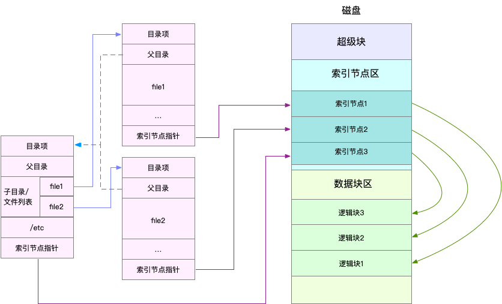
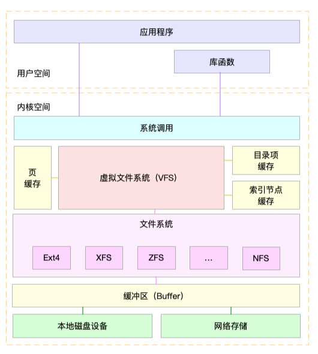

索引节点和目录项
Linux 文件系统为每个文件都分配两个数据结构，索引节点（index node）和目录项（directory entry）。它们主要用来记录文件的元信息和目录结构。
- 索引节点，简称为 inode，用来记录文件的元数据，比如 inode 编号、文件大小、访问权限、修改日期、数据的位置等。索引节点和文件一一对应，它跟文件内容一样，都会被持久化存储到磁盘中。所以记住，索引节点同样占用磁盘空间。
- 目录项，简称为 dentry，用来记录文件的名字、索引节点指针以及与其他目录项的关联关系。多个关联的目录项，就构成了文件系统的目录结构。不过，不同于索引节点，目录项是由内核维护的一个内存数据结构，所以通常也被叫做目录项缓存。
- 索引节点是每个文件的唯一标志，而目录项维护的正是文件系统的树状结构。目录项和索引节点的关系是多对一，可简单理解为，一个文件可以有多个别名。
- 索引节点和目录项纪录了文件的元数据，以及文件间的目录关系
- 磁盘读写的最小单位是扇区，然而扇区只有 512B 大小
- 文件系统又把连续的扇区组成了逻辑块，然后每次都以逻辑块为最小单元，来管理数据。
- 常见的逻辑块大小为 4KB，也就是由连续的 8 个扇区组成。

- 第一，目录项本身就是一个内存缓存，而索引节点则是存储在磁盘中的数据。
- 第二，磁盘在执行文件系统格式化时，会被分成三个存储区域，超级块、索引节点区和数据块区。其中，
- 超级块，存储整个文件系统的状态。
- 索引节点区，用来存储索引节点。
- 数据块区，则用来存储文件数据。
虚拟文件系统
linux文件系统四要素：目录项、索引节点、逻辑块以及超级块
虚拟文件系统 VFS（Virtual File System）：Linux 内核在用户进程和文件系统的中间，引入了一个抽象层

文件系统 I/O
cat命令示例：
- 首先调用 open() ，打开一个文件
- 然后调用 read() ，读取文件的内容
- 最后再调用 write() ，把文件内容输出到控制台的标准输出中
文件读写方式的各种差异，导致 I/O 的分类多种多样：
- 缓冲与非缓冲 I/O
- 直接与非直接 I/O
- 阻塞与非阻塞 I/O
- 同步与异步 I/O
根据是否利用标准库缓存，可以把文件 I/O 分为缓冲 I/O 与非缓冲 I/O
- 缓冲 I/O，是指利用标准库缓存来加速文件的访问，而标准库内部再通过系统调度访问文件。
- 非缓冲 I/O，是指直接通过系统调用来访问文件，不再经过标准库缓存。
根据是否利用操作系统的页缓存，可以把文件 I/O 分为直接 I/O 与非直接 I/O
- 直接 I/O，是指跳过操作系统的页缓存，直接跟文件系统交互来访问文件。
- 非直接 I/O 正好相反，文件读写时，先要经过系统的页缓存，然后再由内核或额外的系统调用，真正写入磁盘。
根据应用程序是否阻塞自身运行，可以把文件 I/O 分为阻塞 I/O 和非阻塞 I/O
- 所谓阻塞 I/O，是指应用程序执行 I/O 操作后，如果没有获得响应，就会阻塞当前线程，自然就不能执行其他任务。
- 所谓非阻塞 I/O，是指应用程序执行 I/O 操作后，不会阻塞当前的线程，可以继续执行其他的任务，随后再通过轮询或者事件通知的形式，获取调用的结果。
根据是否等待响应结果，可以把文件 I/O 分为同步和异步 I/O
- 所谓同步 I/O，是指应用程序执行 I/O 操作后，要一直等到整个 I/O 完成后，才能获得 I/O 响应。
- 所谓异步 I/O，是指应用程序执行 I/O 操作后，不用等待完成和完成后的响应，而是继续执行就可以。等到这次 I/O 完成后，响应会用事件通知的方式，告诉应用程序。
性能观测
- 容量
- 缓存
工具：/proc/slabinfo、slabtop